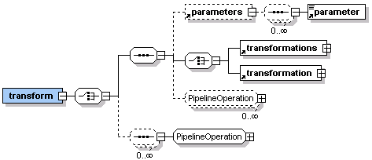

You can use the pipeline:transform element to define one or more XSL transforms on XML pipeline content.
If you use the href attribute, MCS treats the value content as the URI of an XSL transformation. There are two ways to specify the XML to be transformed. You can use the pipeline:content element to contain inline data, or use a urid:fetch pipeline operation.
<html xmlns="http://www.w3.org/2002/06/xhtml2"
xmlns:pipeline="http://www.volantis.com/xmlns/marlin-pipeline"
xmlns:webd="http://www.volantis.com/xmlns/marlin-web-driver">
<head>
<title>DCI elements</title>
</head>
<body>
<div>
<pipeline:transform href="test.xsl">
<webd:get url="http://weather.yahooapis.com/forecastrss">
<webd:parameters>
<webd:parameter name="p" value="USWA0395"/>
<webd:parameter name="u" value="c"/>
</webd:parameters>
</webd:get>
</pipeline:transform>
</div>
</body>
</html>
Otherwise the pipeline:transform element must either contain a pipeline:transformation element or a set of transformations, followed by markup defining the data to be processed. In this case it is possible to pass parameters to child pipeline:transformation elements. The pipeline:parameters element specifies a block of stylesheet parameters.

You can set the compile attribute on the pipeline:transform to specify whether the XSL transform should be compiled or not. See Pipeline caching for further information.
Related topics
About DCI
Passing parameters in transforms
Pipeline caching